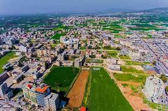
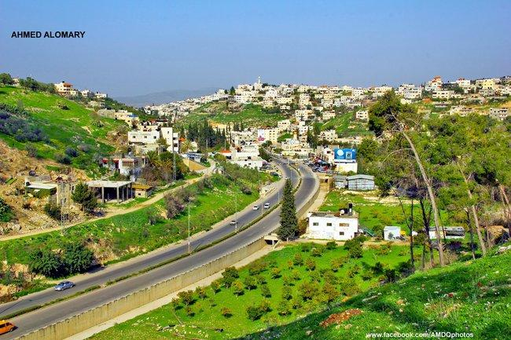
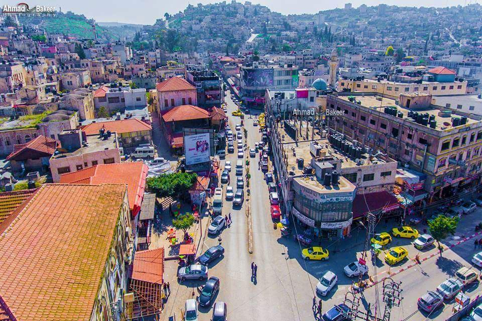

تُعتبرُ مدينة جنين إحدى المدنِ الفلسطينيّة الشمالية، وهي إحدى مدن المثلث الشماليّ الفلسطيني،
ترتفع جنين عن سطح البحر بمعدل 175 م، وتبعد عن العاصمة القدس حوالي 75 كم من الجهة الشماليّة،
أمّا من الناحية الشرقية فهي تطلُّ على غور الأردن، وتطلُّ من الجهة الشماليّةِ على مرج ابن عامر.
تقعُ مدينةُ جنين على الأرض التي كانت تقوم عليها مدينة "ين جنيم"،
وهي مدينة كنعانيّة وتعني عين الجنائن، ولذلك فقد سُميت جنين بهذا الاسم نسبةً إلى كثرة الجنائن والحدائق التي كانت تحيطُ بها

مـــوقـــع مــديــنــة جـــنـــيــــن
تقعُ مدينة جنين على الإحداثيّات 208 عرضاً و178 طولاً وفقَ شبكة الإحداثيّات الفلسطينيّة،
كذلك تقعُ على دائرة عرض 32.28 شمالاً وعلى خطّ طول 35.18 شرقيّ خطّ غرينتش،
وتقعُ جنين وسْطَ المدنِ الفلسطينيّة، حيث أكسبها هذا الموقع أهميّةً كبيرة،
فهي تقع على السفح الشمالي لجبال نابلس وجنوبي مدينة الناصرة على بعد 25 كم،
وكذلك تقعُ إلى الجنوب الشرقيّ من مدينة حيفا على بعد 50 كم، وتقع إلى الشمال من مدينة نابلس على بعد 43 كم.

مـــنـــاخ مــديــنــة جـــنـــيــــن
يختلفُ المناخُ السائد في مدينة جنين عن المناخ العامّ لباقي المدن الفلسطينيّة ويعود ذلك إلى طبيعتها الطبوغرافيّة،
حيث تحيط بها المرتفعات الجبلية، فمن الجهة الشرقية تحيطُ بها جبال جلبون،
ومن الجهة الجنوبيّة والغربية والشمالية الغربيّة تحيط بها جبالُ نابلس،
وكذلك فهي تقعُ على ارتفاع يتراوحُ بين 125 و 225 م، ويصلُ امتدادها الى جبال الكرمل،
وهذا الموقع قلّلَ من استفادة المدينة من الرياح الماطرة والتي تعدلُ درجاتِ الحراراة العالية،
وكذلك عمل على إبعاد المدينة عن مناخ البحر الأبيض المتوسط،
فحرارتها أعلى من المناطق المجاورة، وكميّة الأمطار قليلة بالمقارنة مع المناطق المجاورة لها.
نـــبـــذة عـــن تــــاريـــخ جـــنـــيــــن
أن مدينة جنين نشأت في العهد الكنعاني، وكانت عبارة عن قرية تسمى "عين جيم"،
وذلك في حدود عام 2450 قبل الميلاد، وتعد من أقدم المدن المأهولة في العالم.
وقد تعرضت للغزو من جهة الشمال والجنوب بسبب موقعها.
تغير اسم المدينة في العهد الروماني فأصبحت "جيناي". وحين حكم البيزنطيون بنوا فيها كنيسة "جينا"،
التي عثر على شيء من آثارها بجانب الجامع الكبير في جنين. وقد أرجع المنقبون تاريخ إنشاء الكنيسة إلى القرن السادس الميلادي.
وفي القرن السابع الميلادي، دخلها المسلمون وسكنت فيها قبائل عربية، وسموا المدينة جنين نسبة إلى الجنائن المحيطة بها.
ازدهرت جنين خلال الحكم العثماني، إذ أُسِّسَ فيها أول مجلس بلدي عام 1886.
وفي القرن الـ20 أدت خطوط السكك الحديد إلى وصل جنين بعدد من المدن، منها العقولة وبيسان ونابلس.
وخلال الحرب العالمية الأولى، أنشأ الجيش الألماني مطارا عسكريا غرب مدينة جنين
وقد تعرضت المدينة للانتداب البريطاني مثل بقية أراضي فلسطين.
وغادرها الإنجليز عام 1948، وهو العام المعروف بـ"عام النكبة".
وعام 1949، أصبحت جنين خاضعة لحكم الإدارة الأردنية الهاشمية. وبقيت تحت الحكم الأردني إلى حين احتلتها إسرائيل عام 1967،
وبقيت خاضعة للاحتلال الإسرائيلي إلى عام 1995، إذ انتقلت إلى إدارة السلطة الوطنية الفلسطينية بموجب اتفاق غزة–أريحا.
وأصبحت مدينة جنين مركزا لمحافظة جنين.
تعد مدينة جنين زراعية لحد كبير إذ تشكل مركز التسويق والتمويل الزراعي للمحافظة،
حيث تعد أراضيها الزراعية واحدة من أكثر المناطق خصوبة في الضفة الغربية،
حيث تزرع سنوياً بالمحاصيل الحقلية والخضار والأشجار المثمرة كالزيتون
واللوزيات والحمضيات، بالإضافة إلى استخدام البيوت البلاستيكية على نطاق واسع

أشـــهـــر المـــعـــالـــم في جـــنـــيــــن
اســم المـــعـــلـــم
مـــعـــلـــومـــات عـــنـــه
صـــورة لـــه
جـــامـــع جـــنـــيـــن الــكـــبـــيـــر
مسجد جنين الكبير، الجامع الكبير أو مسجد فاطمة خاتون،
هو مسجد تاريخي يقع وسط مدينة جنين شمال الضفة الغربية.
بُني المسجد في عهد السلطان العثماني سليمان القانوني في العام 1566 م
وذلك على يد فاطمة خاتون ابنة محمد الأشرف ابن السلطان قانصوه الغوري،
وزوجة الصدر الأعظم البوسني لالا مصطفى باشا.
الـــحــــديـــقـــة الـــعـــســـكـــريّـــة
هي أحد المعالم التي تؤرخ لتاريخ المدينة العسكري،
من خلال عرض عدد من الأسلحة المستخدمة بالمنطقة
خلال فترات زمنية مختلفة من تاريخ المدينة.
ســـوق الـــســـيـــبـــاط
سوق السيباط في جنين سوق أثري تم بناؤه أثناء الحقبة العثمانية في فلسطين.
والسيباط كلمة عربية معناها بناء كبير مسقوف له طريقان للدخول و للخروج.
يقع سوق السيباط في مدينة جنين بين حارتي البلدة القديمة في جنين،
وله خمسة منافذ. ويقع مدخله الرئيسي تحت مقر مكتبة بلدية جنين
التي كانت في السابق مقر بلدية جنين.